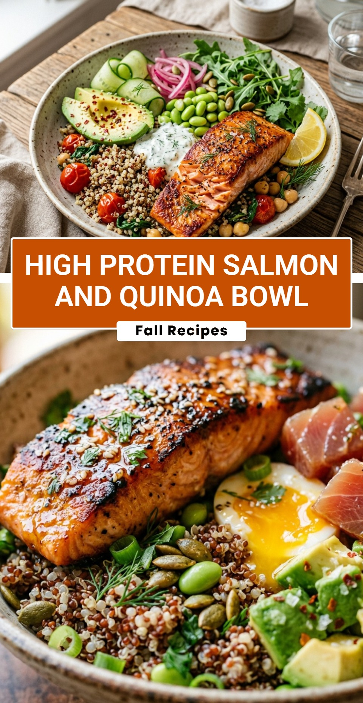

High Protein Salmon and Quinoa Bowl
October 18, 2026

Looking for a meal that is both satisfying and incredibly nutritious? This High Protein Salmon and Quinoa Bowl is the perfect solution. It combines flaky, pan-seared salmon with fluffy quinoa and fresh vegetables. It is a powerhouse of omega-3 fatty acids, complete proteins, and essential fiber. Whether you need a post-workout refuel or a healthy weeknight dinner, this bowl delivers on flavor and health benefits.
Recipe Information
Prep Time: 15 minutes
Cook Time: 20 minutes
Total Time: 35 minutes
Servings: 2
Difficulty Level: Easy
Nutrition Information
Calories per serving: 560
Protein: 42g
Carbohydrates: 45g
Fat: 24g
Fiber: 9g
Sugar: 3g
Sodium: 480mg